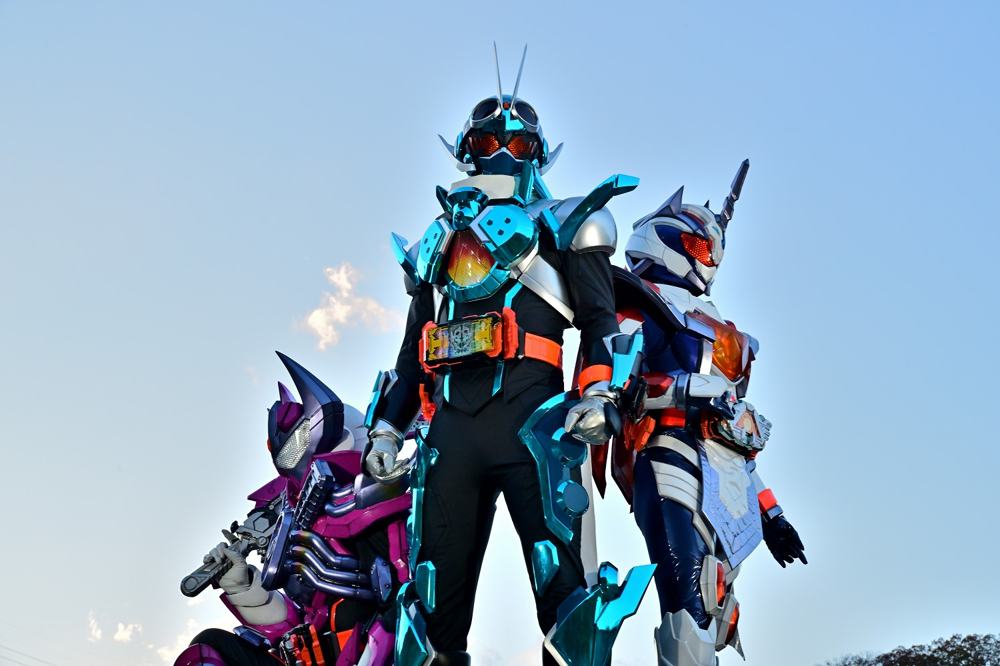
2023年から放送された「仮面ライダーガッチャード」に登場する仮面ライダー
変身者は一ノ瀬宝太郎。ガッチャードライバーと2枚のライドケミーカードを使い変身する。
人間の形態とワイルドモードと呼ばれる異形の形態を使い分け戦う。
基本形態はスチームホッパー。
身長：205cm 体重：90.3kg パンチ力：8.2t キック力:10.0t ジャンプ力：ひと跳び17.2m 走力：100mを7.3秒程度
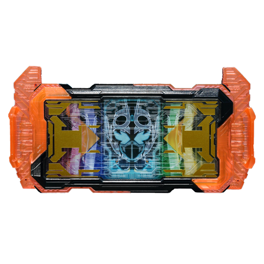
ガッチャードライバーに２枚のライドケミーカードを装填する。
ケミーカードにはレベルナンバーが表記されており、２枚のレベルを合わせて１０になれば
変身することができる。
（カードにも相性があり、ただ１０になればいいって話ではない。）
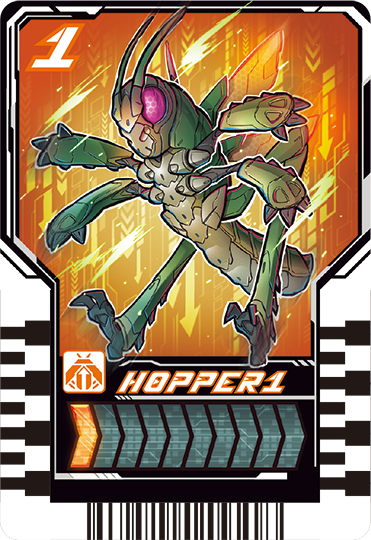
錬金術の力で生み出した人工生物を封印したカード
インセントやオカルトなど様々な属性のケミーが存在する。
レベルナンバーは１から１０まであり、１０のケミーはほかのケミーより戦闘力等が桁違い。
ケミーは全部で１０１体存在する。
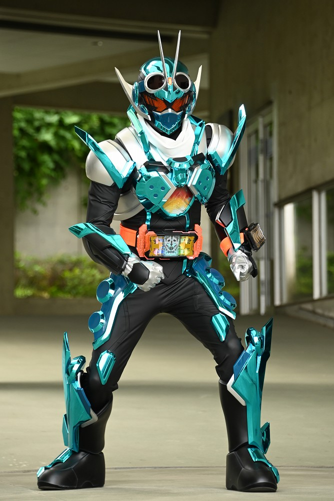
スチームホッパー
「ホッパー１」と「スチームライナー」ライドケミーカードで変身
バッタ特有のジャンプ力と蒸気機関車の蒸気と加圧効果で高威力の一撃を放つ。
バランスの良い形態。
すごいピカピカしてる。
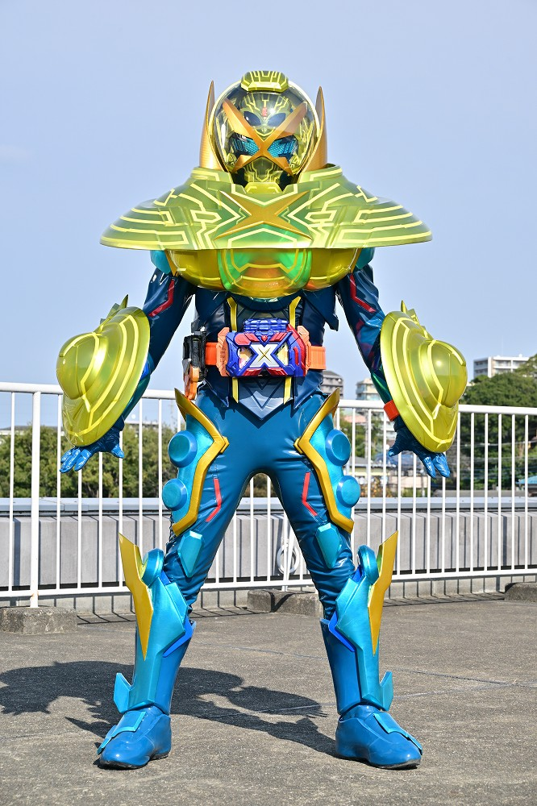
スーパーガッチャード クロスユーフォーエックス
「ホッパー１」と「スチームライナー」「ユーフォーエックス」ライドケミーカードと
武器兼強化パーツのエクスガッチャリバーで変身
レベルナンバー１０のケミーを加えたスーパーガッチャードであり、
物理法則を無視した挙動による攻撃や人間とケミーを分離する能力を持つ。
肩が上がらない。
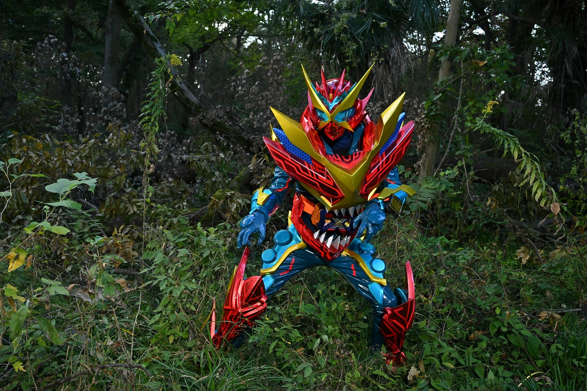
スーパーガッチャード クロスエックスレックス
「ホッパー１」と「スチームライナー」「エックスレックス」ライドケミーカードと
武器兼強化パーツのエクスガッチャリバーで変身
エックスレックスの力で、圧倒的な破砕力を秘めている。
特殊能力は特にないが、純粋にスペックを底上げできる形態。
中盤からこの形態で対処できない敵が出てきたため、出番が少なくなり、終盤では全く出なかった。
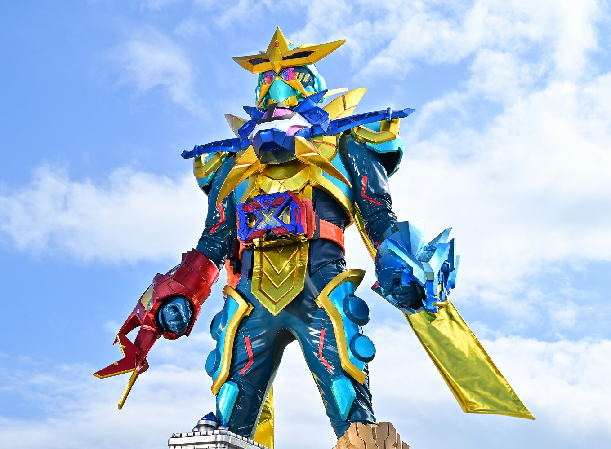
スターガッチャード
「ホッパー１」と「スチームライナー」「Xアッセンブル」ライドケミーカードと
武器兼強化パーツのエクスガッチャリバーで変身
レベルナンバー１０のケミー５体の力を加えたスーパーガッチャードであり、驚異の７重錬成
高速移動や砲撃などそれぞれのケミーの力を発揮する。
多重錬成は出来て３体のため７体は例がなく、それもレベルナンバー１０のケミーで行っているため、
戦闘力は中間形態のプラチナガッチャードに引けを取らない。
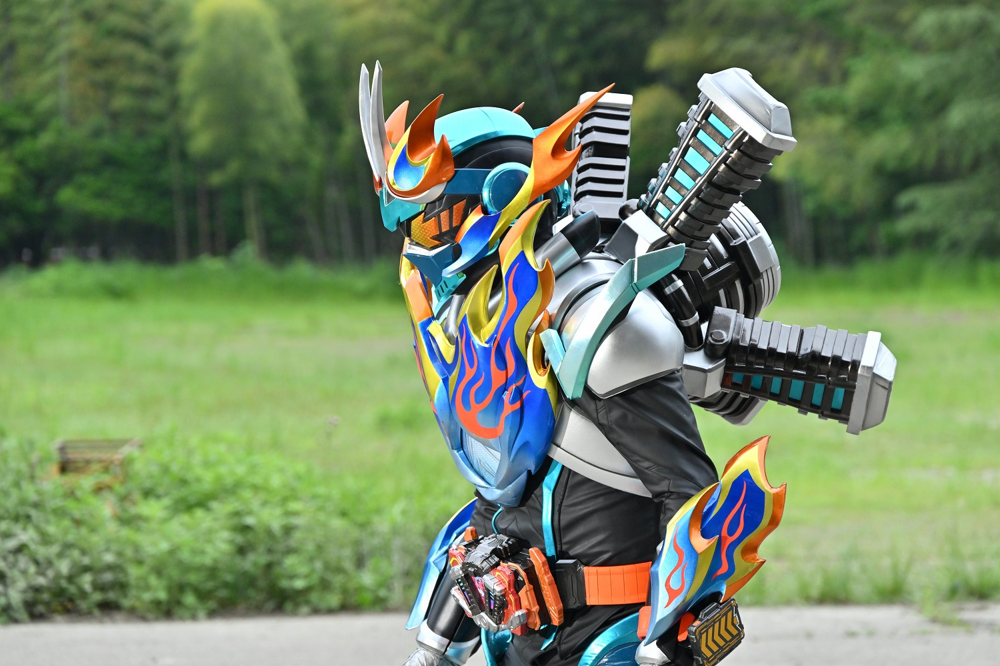
ファイアーガッチャード
「ホッパー１」と「スチームライナー」
強化パーツのガッチャーイグナイターで変身
背中に特大の推進器を搭載しており、超加速の戦闘が可能。
突破力が優れており、相手がガードをする前に攻撃を叩き込むことができる。
ただし、推進器の熱量が高く、推進器の冷却等のサポートが必須。
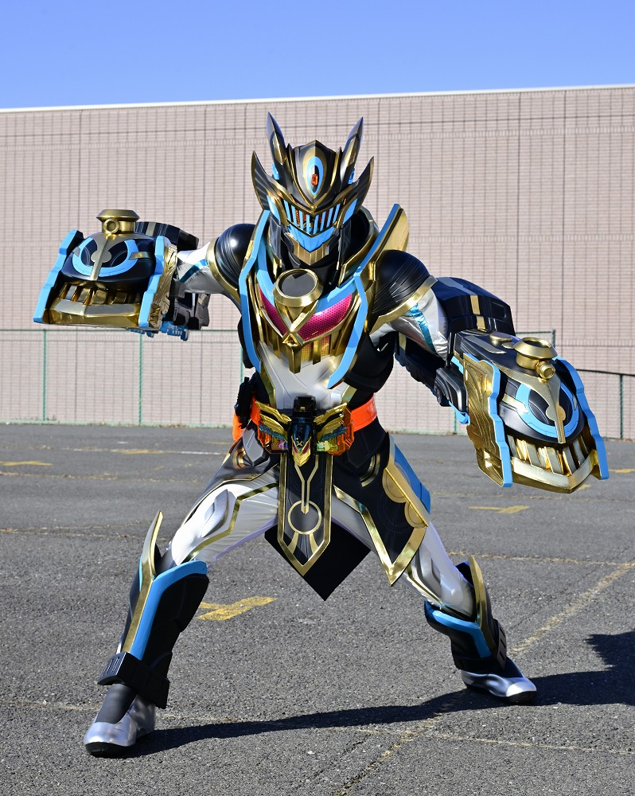
アイアンガッチャード
「テンライナー」ライドケミーカードで変身
スチームライナーがレベル１０へと進化した「テンライナー」１枚を使用する。
両腕の機関鉄拳「ヘビーエクスプレッシャー」は高圧スチームを用いた凄まじい一撃を放つ。
鉄拳は腕部から分離、遠隔操作が可能。
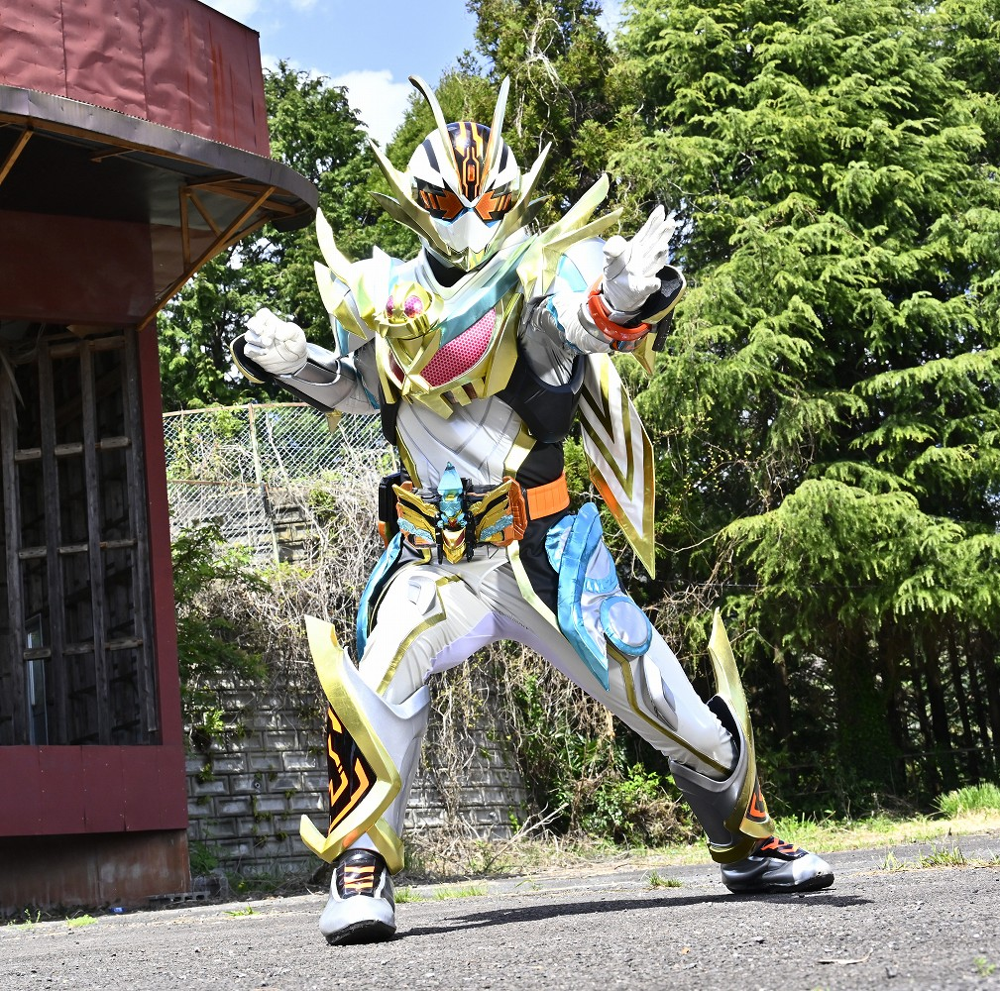
プラチナガッチャード
「クロスホッパー」と「テンライナー」の２枚のライドケミーカードで変身
ケミーたちの力を加える強化「ユニゾン」を使い、多種多様な能力を発揮する。
中間形態なのに負けた場面がほぼない。
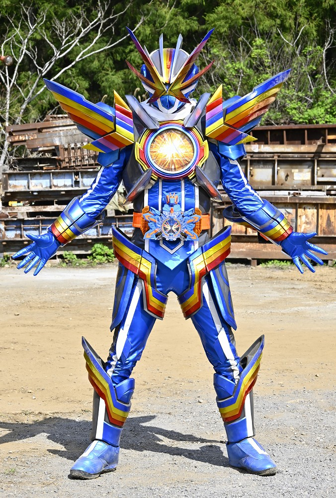
レインボーガッチャード
「ニジゴン」と「ニジゴン」の力を宿したライドケミーカードで変身
あらゆる物質を自在に変化させる錬金術を得意とする。
ケミーたちを仮面ライダーの状態で召喚し、召喚したライダーは自身とほぼ同スペックの状態になる。
必殺技の殺意が高い。あと間近で見た時の顔の圧がすごい。
仮面ライダー一覧